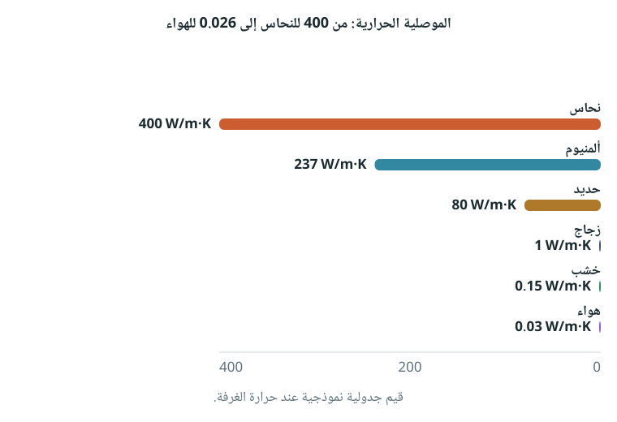

لماذا يبدو المعدن أبرد من الخشب وهما بنفس الحرارة؟
Why metal feels colder than wood at the same temperature
الإحساس بالبرودة يقيس سرعة سحب الحرارة من الجلد لا الحرارة نفسها. موصلية النحاس 400 واط/م·كلفن مقابل 0.15 للخشب — فرق 2,600 ضعف.
ضع يدك على مقبض معدني ولوح خشبي في غرفة واحدة: كلاهما 22 مئوية، والمعدن يبدو أبرد. السبب أن الجلد لا يقيس الحرارة بل معدل انتقال الطاقة منه. الجلد عند نحو 34 مئوية، فالحرارة تخرج منه إلى أي جسم أبرد. الموصلية الحرارية للنحاس 400 واط/م·كلفن، والألمنيوم 237، والحديد 80، والخشب 0.15، والهواء 0.026. المادة الموصلة تسحب الحرارة من نقطة التلامس بسرعة وتحافظ على فرق حراري كبير، فيستمر النقل ويشعر الجلد بالبرودة. الخشب يسخّن سطحه سريعاً فيقترب من حرارة الجلد ويتوقف النقل تقريباً. والحرارة النوعية تضيف عاملاً ثانياً: المعدن يحتاج طاقة أكثر لكل كلفن، فلا يدفأ موضعه سريعاً.
الآلية
كيف يحدث الأمر على مستوى الجسيمات أو المتغيّرات المباشرة
الإحساس الحراري هو معدل تدفق الحرارة من الجلد عبر مساحة التلامس. كلما كانت المادة موصلة أكثر وحرارتها النوعية الحجمية أعلى، بقي الفرق الحراري قائماً وبقي التدفق مستمراً، فيُترجم الدماغ ذلك إلى «برودة». هذا هو نفس مبدأ مقياس الحرارة: يبدو بارداً لأنه يأخذ منك حرارة.
الأرقام والوحدات
العلاقات والوحدات والنطاقات العددية التي تسند الشرح
الموصلية بواط/م·كلفن: نحاس 400، ألمنيوم 237، حديد 80، زجاج 1.0، خشب 0.15، هواء 0.026. النسبة بين النحاس والخشب 2,667. ولمقارنة السعة: الحرارة النوعية للنحاس 0.385 كيلوجول/كجم·كلفن مقابل 1.7 للخشب، لكن كثافة النحاس 8,900 كجم/م³ مقابل 600 للخشب، فالسعة الحجمية للنحاس أعلى بأربعة أضعاف تقريباً.
الفرق الدقيق
المفهوم الملتبس الذي يُخلَط به، وأين ينفصلان
الحرارة والبرودة ليستا خاصيتين في الجسم بل في العلاقة بين جسمين. مقياس الحرارة يقرأ الحالة، والجلد يقرأ التبادل. من هنا الغلط الشائع في اختيار مقابض المقالي: يفترض أن المقبض المعدني «أسخن» بينما هو أسرع في نقل الحرارة فقط.
حدود التعريف
أين ينكسر التعريف أو النموذج وما الذي لا يفسّره
الإحساس يتأثر بالرطوبة والريح وسماكة الجلد ومساحة التلامس وزمنه. ولمس قطعة صغيرة من المعدن يبدو أقل برودة من لمس كبيرة لأن الكتلة الصغيرة تسخن سريعاً. كما أن الطلاء والطبقة المؤكسدة تغيّران النتيجة عملياً.

| الكمية | القيمة | المصدر |
|---|---|---|
| موصلية النحاس | 400 W/m·K | [1] |
| موصلية الخشب | 0.15 W/m·K | [2] |
| موصلية الهواء الساكن | 0.026 W/m·K | [2] |
المصادر
- 1 Engineering ToolBox — Thermal Conductivity of Common Materials — Engineering ToolBox. www.engineeringtoolbox.com/thermal-conductivity-d_429.html · اطُّلع عليه 2026-11-16
- 2 OpenStax, College Physics 2e — Conduction — OpenStax. openstax.org/books/college-physics-2e/pages/14-5-conduction · اطُّلع عليه 2026-11-16
راجعه: مراجعة آلية — ديوان المعرفة (أرقام محسوبة + مصادر متحققة) 2026-11-16 · 2026-11-16 · آخر تحديث 2026-11-16
رجوع إلى المقالات